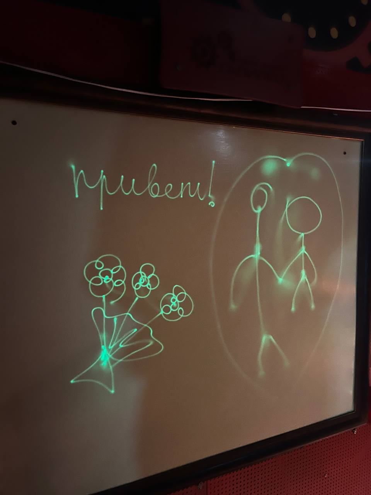
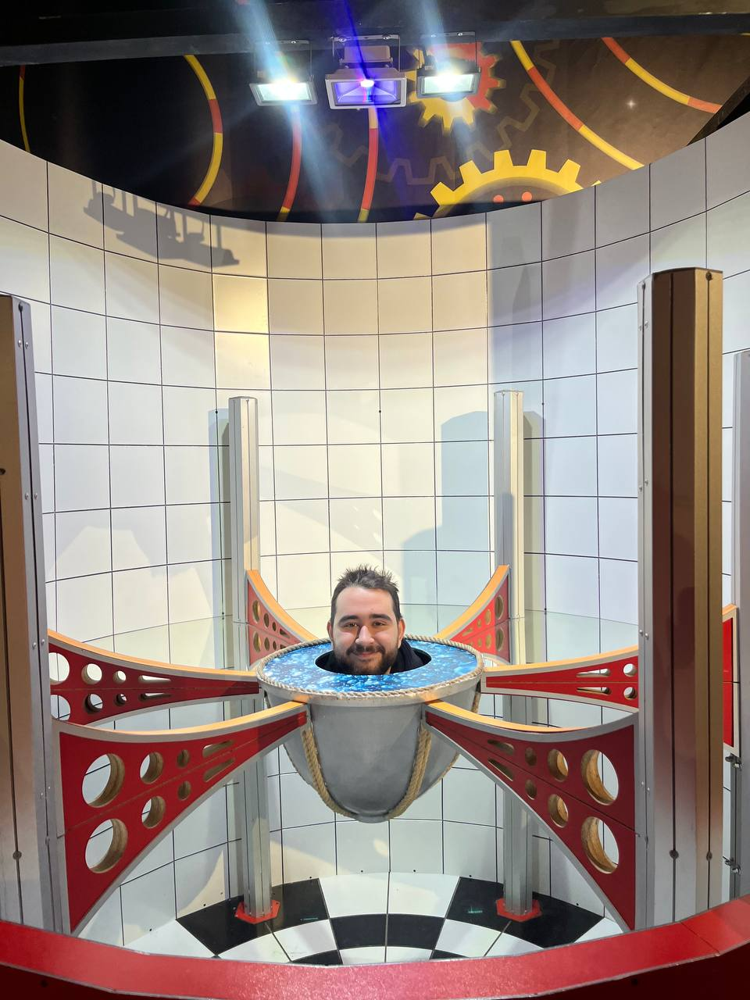
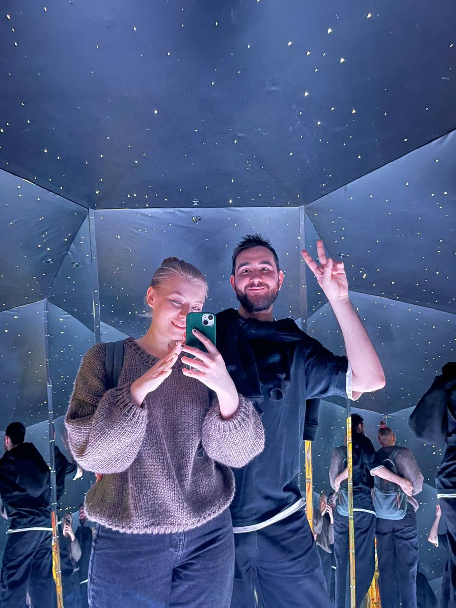

Нажми, чтобы прочитать...
Моя родная,
В этот весенний день хочу сказать тебе самое главное... Каждое утро я просыпаюсь и благодарю судьбу за то, что наши дорожки сошлись. Твоя улыбка освещает мою день ярче любого солнца, а смех звучит для меня самой прекрасной мелодией.
Ты делаешь этот мир лучше просто тем, что существуешь. Спасибо тебе за тепло, заботу, за то, и что ты веришь в меня. С 8 Марта, моя весна! Пусть эта весна принесёт тебе столько счастья, сколько лепестков у цветущей сакуры.
Твой? Даня



Нажимай на цветочки ❤️